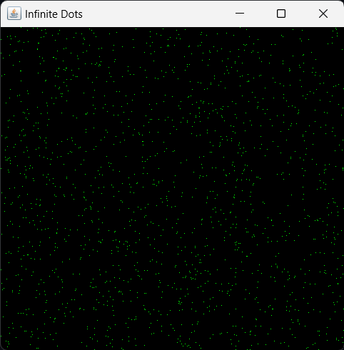

CODE
// Java Program to Display Several Dots on the Screen Continuously.
import javax.swing.*;
import java.awt.*;
import java.lang.Math;
// import java.awt.Graphics.*;
class dispdots {
//Driver function
public static void main(String args[]) {
//Create a frame
JFrame frame = new JFrame("Infinite Dots");
frame.setSize(500, 500);
frame.getContentPane().setBackground(Color.black);
frame.setDefaultCloseOperation(JFrame.EXIT_ON_CLOSE);
frame.setVisible(true);
/*Draw the dots on frame continuously using method paint
until the user closes the frame*/
while (frame.isVisible()) {
paint(frame.getGraphics());
try {
//Delay by 1ms
Thread.sleep(1);
} catch (InterruptedException ie) {}
}
}
//function to draw a dot on the frame
public static void paint(Graphics g) {
g.setColor(Color.green);
int x = (int)(Math.random() * 1000) % 500;
int y = (int)(Math.random() * 1000) % 500;
g.drawLine(x, y, x, y);
}
}
OUTPUT
